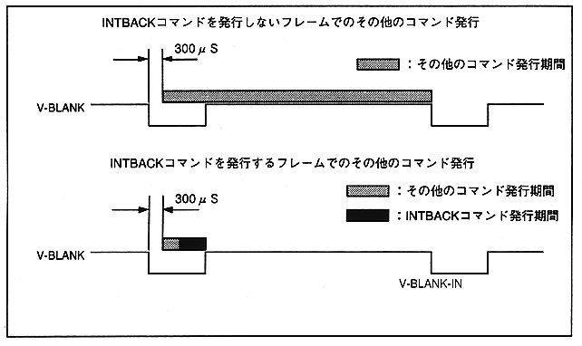

Return to previous page ｜ Return to menu ｜ Go to next page
-
Figure 2.7 Issuing other commands

-
■ Command issue restriction
- Restrictions on issuing commands are shown below.
- Command issue processing for SMPC should be done in a single task as much as possible. If issue processing is divided into multiple parts, problems such as double command issuance may occur, which may cause SMPC malfunction or deadlock.
If it is unavoidable that multiple tasks need to issue commands to the SMPC, be sure to implement exclusive control in addition to the above-mentioned command issuing method so that commands are not issued twice. .
Even when - commands are issued consecutively, be sure to check the status flag so that double command issuance does not occur, and issue the next command after the previous command execution is completed.
- The real-time clock is counted up once per second. Immediately after V-BLANK-IN, the reset button is detected inside SMPC. Please note that if the command is issued while these processes are being performed, the command processing time will vary because these processing times are added to the command processing time.
The - SMPC command can be issued from either the master or slave SH-2, but there are commands that limit issuance, such as system shutdown.
Table 2.5 shows each SH-2 command issue limit.
Return to previous page ｜ Return to menu ｜ Go to next page